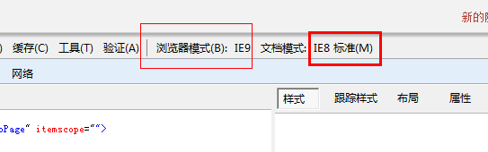
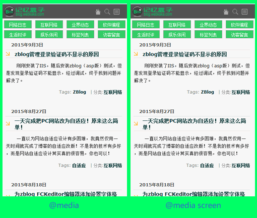

分享人：方兵
目录
1.背景介绍
2.知识剖析
3.常见问题
4.解决方案
5.编码实战
6.扩展思考
7.参考文献
8.更多讨论
在 CSS2 中，你可以为不同的媒介设备（如屏幕、打印机）指定专用的样式表，而现在借助 CSS3 的 Media Queries 特性，可以更为有效的实现这个功能。你可以为媒介类型添加某些条件，检测设备并采用不同的样式表。
概念
@media 可以针对不同的屏幕尺寸设置不同的样式，特别是如果你需要设置设计响应式的页面，@media 是非常有用的。 当你重置浏览器大小的过程中，页面也会根据浏览器的宽度和高度重新渲染页面。
媒体类型
screen用于电脑屏幕，平板电脑，智能手机等设备
媒体功能
width = device-width：宽度等于当前设备的宽度
initial-scale：初始的缩放比例（默认设置为1.0）
minimum-scale：允许用户缩放到的最小比例（默认设置为1.0）
maximum-scale：允许用户缩放到的最大比例（默认设置为1.0）
user-scalable：用户是否可以手动缩放（默认设置为no，因为我们不希望用户放大缩小页面）
/* 常用设备 */
设备 屏幕尺寸参数
显示器 1280 x 800
ipad 1024 x 768
Android 800 x 480
iPhone 640 x 960
现在有很多人的IE浏览器都升级到IE9以上了，但是浏览器的文档模式依然是之前的版本。
这会导致一些css样式渲染无效
为了防止这种情况，我们需要下面这段代码来让IE的文档模式永远都是最新的：
(meta http-equiv='X-UA-Compatible' content='IE=edge')
IE8既不支持HTML5也不支持CSS3 Media
我们需要加载两个JS文件，来保证我们的代码实现兼容效果：
(!--[if lt IE 9])
(script src="https://oss.maxcdn.com/libs/html5shiv/3.7.0/html5shiv.js")(/script)
(script src="https://oss.maxcdn.com/libs/respond.js/1.3.0/respond.min.js")(/script)
(![endif]--)
CSS3 Media写法
我们先来看下下面这段代码，估计很多人在响应式的网站CSS很经常看到类似下面的这段代码：
@media screen and (max-width: 960px){
body{
background: #000;
}
}
这个应该算是一个media的一个标准写法，上面这段CSS代码意思是：当页面小于960px的时候执行它下面的CSS.这个应该没有太大疑问。
等于960px尺寸的代码：
@media screen and ((max-device-width:960px){
body{
background: #000;
}
}
然后就是当浏览器尺寸大于960px时候的代码了：
@media screen and (min-width:960px){
body{
background: #000;
}
}
我们还可以混合使用上面的用法：
我们先来看下下面这段代码，估计很多人在响应式的网站CSS很经常看到类似下面的这段代码：
@media screen and (min-width:960px) and (max-width:1200px){
body{
background:yellow;
}
}
上面的这段代码的意思是当页面宽度大于960px小于1200px的时候执行下面的CSS。
@media 和@media screen有什么区别？
解密
上图看出，没有任何区别。没错，确实没有任何区别，因为@media与@media screen的css在手机设备里都是有效的。
@media screen的css在打印设备里是无效的。
而@media在打印设备里是有效的，这就是它们的区别了。
参考一：360doc
参考二：w3cways
width 和device-width 差别在哪里？
width : 因为浏览器可以自由调整宽度，所以这边指的是该浏览视窗的宽度。
device-width : 就算你把浏览器视窗弄到符合最大(小)宽度，还是不会生效。
因为，device-width 指的是使用者的「设备」最大宽度，而不是浏览器视窗。
所以，device-width 常用在判断手机这样的物理设备上。
感谢大家观看
by 方兵